#1446 Explosiv
Alternativ: Blown Away
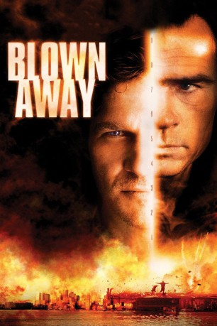 
 IMDB-Wertung: 6.2 / 10
IMDB-Wertung: 6.2 / 10  Metascore: 0
Metascore: 0 
In Boston explodiert eine Bombe mit derartiger Gewalt, daß selbst den hartgesottensten Experten des städtischen Sprengkommandos mulmig wird. Alle Anzeichen deuten darauf hin, daß ein genialer Bombenleger alle früheren Erpresser in den Schatten stellt - und er meint es ernst. Niemand kann ihn aufhalten - außer Einsatzleiter Jimmy Dove (Jeff Bridges). Durch den tödlichen Gegner (Tommy Lee Jones) wird Dove mit seiner eigenen Vergangenheit konfrontiert, die er längst vergessen glaubte.
Jahr: 1994
Dauer: 121 Minuten
FSK: 16
Land: USA Studio: MGMTonspuren: DD5.1 - ,
Untertitel:
Auflösung: 1080p (1920x800) Größe: 9216 MB
Genre: Action, Thriller, Drama, Krimi
Regisseur:  Stephen Hopkins
Stephen Hopkins
Drehbuch: John Rice, Joe Batteer, Jay Roach, Joe Batteer, John Rice
Soundtrack: Alan Silvestri
Darsteller:
 Jeff Bridges als James 'Jimmy' Dove / Liam McGivney
Jeff Bridges als James 'Jimmy' Dove / Liam McGivney- 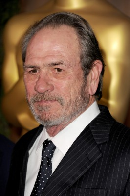 Tommy Lee Jones als Ryan Gaerity
- Suzy Amis als Kate Dove
- 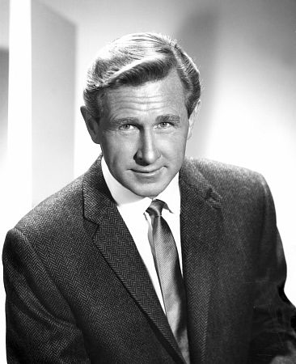 Lloyd Bridges als Max O'Bannon
- 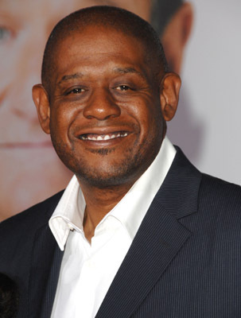 Forest Whitaker als Anthony Franklin
- Stephi Lineburg als Lizzy
- 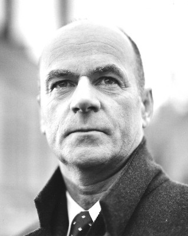 John Finn als Capt. Fred Roarke
- Caitlin Clarke als Rita
- 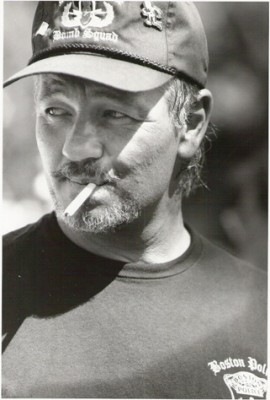 Loyd Catlett als Bama
- 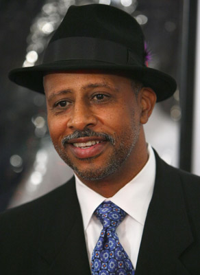 Ruben Santiago-Hudson als Blanket
- Josh McLaglen als Prison Guard
 Alan D. Purwin als Helicopter Pilot
Alan D. Purwin als Helicopter Pilot- David B. Nowell als Helicopter News Cameraman
- Mark Berry als Motorcycle Cop
- Faleena Hopkins als Irish Girl
 Michael J. Reynolds als Wedding Band
Michael J. Reynolds als Wedding Band- Jon Alex als M.I.T. Grad Student , uncredited
- 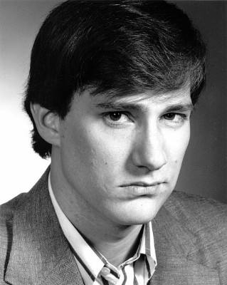 Eric Bruno Borgman als Baseball Fan , uncredited
- Brina als Crime Witness , uncredited
 Jeffrey Corazzini als Waiter at Wedding , uncredited
Jeffrey Corazzini als Waiter at Wedding , uncredited- Scott J. Fisher als Drunk Singer in Bar , uncredited
- Chris Flockton als Police Photographer , uncredited
- 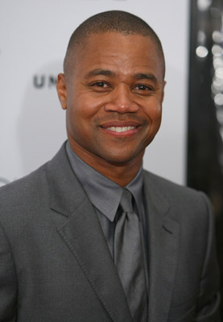 Cuba Gooding Jr. als Bomb Squad Class Member , uncredited
- Craig Richard Nelson als Boston Pops Conductor , uncredited
- 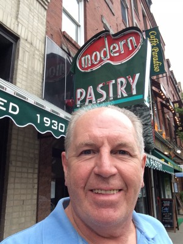 Ed O'Keefe als Press Photographer , uncredited
- 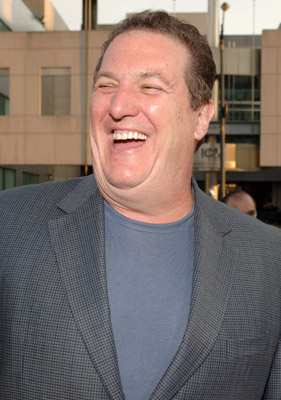 Mike Starr als Francis the Barkeeper , uncredited
- 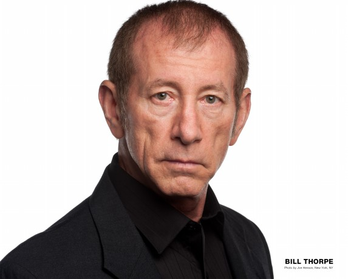 Bill Thorpe als Drunk Singer in Bar , uncredited
- Christofer de Oni als Cortez
- Lucinda Weist als Nancy
- Brendan Burns als Kevin
- Tricia Heine als Connie
- Ken Kerman als Prison Guard
- David U. Hodges als Prisoner
- Robert 'Bobby Z' Zajonc als Helicopter Pilot
- Dee Nelson als Mother
- Judd Daniel King als Justin
- Chris O'Neill als Boyle
- Whitney Cline als Babysitter
- Michael Macklin als TV Reporter
- Sara Edwards als TV Reporter
- Evelyn Lee-Jones als Gospel Singer
- Larry Reynolds als Wedding Band
- Terry O'Shea als Wedding Band
- George Landers als Wedding Band
- John Farrell als Wedding Band
- Jesse Barrett-Mills als Baseball Fan , uncredited
- Brian Eggleston als Fenway Park Patron , uncredited
- Frédéric Morin als Fan at Fenway Park , uncredited
Datei: X:\1994\Explosiv (1994, FSK16, 1920x800).mkv seit 06.07.2015
Festplatte: HD 1992-1995
 Es gibt insgesamt 67 Filme in der Gruppe '1994'
Es gibt insgesamt 67 Filme in der Gruppe '1994'